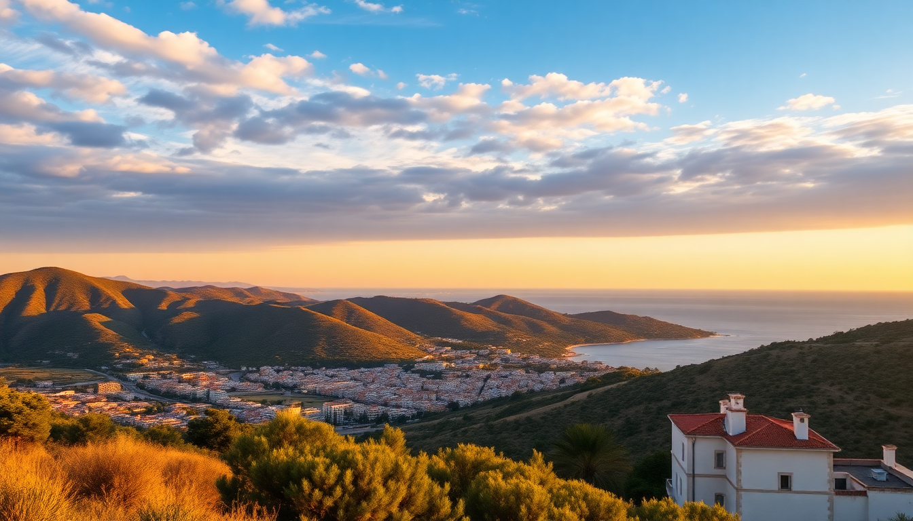

Best Time to Visit Spain's Costa del Sol: Seasonal Guide

I’ve been to the Costa del Sol four times now, in every season except deep winter. Each trip felt like a different coast. The sun-soaked August version is packed, sweaty, and electric. The quiet November version is all empty promenades and affordable tapas. This guide breaks down what each season actually delivers—weather, crowds, and prices—so you can pick the window that fits your trip, not someone else’s Instagram feed.
When is the best weather on the Costa del Sol?
For pure beach weather, June through September is your window. But “best” depends on what you want to do. I’ve swum in the Mediterranean in late October near Nerja and found the water still comfortable—around 20°C. The air temperature in July and August regularly hits 32–35°C in Málaga city, which can feel punishing if you’re walking the Calle Larios shopping strip at midday.
Spring (April–May) and autumn (October–November) offer the sweet spot: 22–28°C, low humidity, and fewer people fighting for a towel spot on Playa de la Malagueta. I’d take a May afternoon in Marbella’s Old Town over an August scorcher any day.
When are the crowds worst?
August is a zoo. I made the mistake of driving from Málaga Airport to Marbella on the first Saturday of August. The AP-7 toll road was a parking lot for 40 minutes. Beaches from Torremolinos down to Fuengirola are shoulder-to-shoulder by 11 AM. If you’re set on a summer trip, book accommodation with a pool—I stayed at Gran Hotel Miramar in Málaga and the pool deck was a lifesaver when the beach felt like a sardine can.
July and Easter week are also heavy. For lighter crowds, aim for:
- Late May – warm enough to swim, schools still in session across Europe
- Mid-September – sea is warmest from summer heat, families have gone home
- October – empty beaches, but some chiringuitos (beach bars) start closing for the season
When are prices lowest?
The cheapest months are November through February, excluding Christmas and New Year’s week. I booked a room at Hotel Palacio de Villapanés in Seville (a two-hour train from Málaga) for €90 a night in early December—half the summer rate. On the coast, I found a seafront apartment in Fuengirola for €55 a night in late January.
Flights from northern Europe and the UK drop sharply after October. The trade-off: many beach clubs, water parks, and smaller restaurants shut down from November to March. The Caminito del Rey hike near Ronda stays open year-round, but book tickets online in advance—winter slots fill up with locals.
Is winter worth visiting?
I was skeptical, but a January trip changed my mind. Daytime highs in Málaga hover around 17–19°C—perfect for walking the Gibralfaro Castle trail without sweating. The city’s Picasso Museum and Mercado de Atarazanas food market are uncrowded. You won’t sunbathe, but you’ll eat well and pay half.
The downsides: rain. January and February average 6–8 rainy days per month. I got stuck in a downpour walking from Plaza de la Constitución back to my rental in Soho Málaga. Pack a waterproof jacket and plan indoor backups (the Automobile Museum is surprisingly good). Nightlife is quiet outside weekends.
What about festivals and events?
If you time it right, local events shape the experience. I’ve been to Semana Santa (Holy Week) in Málaga once—the processions are spectacular, but the city is packed and hotel prices triple. For a less intense cultural hit, try Feria de Málaga in August: a week of flamenco, fairground rides, and free concerts in the Cortijo de Torres park. It’s hot and loud, but the energy is unmatched.
Other key events:
- Carnival in Málaga – February, parade and costumes, smaller than Cádiz but fun
- Marbella International Film Festival – October, screenings at Puerto Banús and Teatro Ciudad de Marbella
- Noche de San Juan – June 23, bonfires on every beach, locals jump over flames at midnight
When should I avoid the Costa del Sol entirely?
Honestly, there’s no bad month, but I’d skip late July through mid-August unless you love crowds and high prices. The heat in Málaga city is oppressive—the stone streets of the historic center radiate heat well past sunset. I remember eating at El Pimpi (a famous bodega near the Roman Theatre) in August and the courtyard felt like an oven at 10 PM.
Also avoid Easter week if you’re on a budget. Accommodation in Marbella and Málaga sells out months ahead. I saw a basic double room at Room Mate Larios go for €350 a night during Semana Santa—€120 in September.
FAQ
Is the Costa del Sol worth visiting in November? Yes, if you don’t need beach weather. I spent a week in November based in Málaga and used it as a base for day trips to Ronda and Granada. The Alhambra was half as crowded as in summer. Bring layers—mornings are 12–15°C, afternoons hit 20°C if you’re lucky. Most restaurants in Marbella’s Old Town stay open, but beach bars are shuttered.
Which is better for a winter trip: Marbella or Málaga? Málaga, by a wide margin. The city has more museums, better public transport, and a livelier winter food scene. Marbella feels sleepy from November to February—many Puerto Banús clubs and high-end restaurants close for the season. I stayed in Málaga’s La Merced neighborhood and walked everywhere. For a quiet escape, Marbella works, but you’ll need a car.
Can you swim in the Costa del Sol in October? Yes. I swam at Playa de Burriana in Nerja on October 15 last year. Water temperature was around 20°C—refreshing but not cold. The sea is warmest in September and early October. By November, most locals stop swimming. Lifeguards and showers are still present at major beaches in October, but disappear by November 1.
Conclusion
- June and September offer the best balance of warm sea, manageable crowds, and reasonable prices
- Winter (Nov–Feb) is for budget travelers and city explorers—skip the beach, hit the museums
- August is for party crowds who don’t mind heat and queues—book everything months ahead
- Spring and autumn give you the most flexible itinerary: hike in the morning, beach in the afternoon, eat outside at night
- Easter and Christmas spike prices dramatically—avoid them unless you’re attending specific events